Debugging
With the help of a disassembler, it is possible to understand what a binary is doing. But it is sometimes more helpful to see how the program behaves while running. This is where a debugger can be used. With it, you can figure out why a program crashes and look what is in the registers and the memory at a given point of the execution (very helpful to see with which parameters a function is called). It is also possible to step though each single instruction, so it is easier to find out where the error is really happening.
Exercise 1
The provided program makes a small password-check and displays if the input was the right password or not. Try to figure out the right password.
Hint: check the c function-calls and their parameters
The usage of this program is ./ex1 password
Exercise 2
This example crashes when it is executed. Try to figure out where this happens and what error the developer made.
The usage of this program is ./ex2
Exercise 3
In this example, the program gets a number as input, does some calculation with it and should exit with the code 0.
However, there are some bugs, which let the program crash, or you may also receive the wrong exit-code. So try to find out which input actually works and returns 0.
The usage of this program is ./ex3 number
Solutions for IDA Pro
As we saw in the exercises for '2. Understanding Algorithms', finding out what a binary is doing can be very time-consuming and only guessing what a program does is also not the best way to analyze a binary. So we use a debugger in addition to the features of Radare2, we used before.
The debugger can be started with the menu or by pressing F9.
Exercise 1
When we load the program in IDA Pro, we are shown the function start, but not the main-function which we want. When we look at the functions, we see that there are too many of them to go through, so we need another solution to find out where the interesting code is.
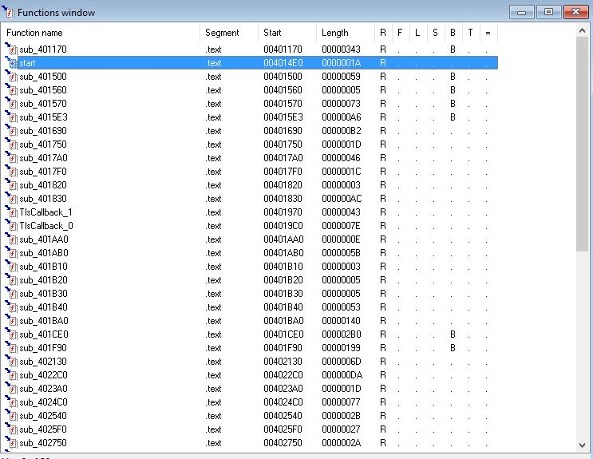
But we can help our self by simply starting the program in a command window. This gives us the following output:
Usage: ex1 password
This means that somewhere in our program this string must printed and this is also where the relevant logic lies. So we go to the 'Strings window' and search for 'Usage:' (You can use the search-function from the menu)
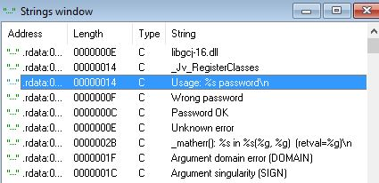
By double-clicking the string, we are taken to the .rdata section of this string.
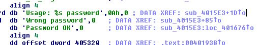
Here we see the XREF, where the string is used. Again, we can double-click it to get taken to the code-section where it is used. This function looks very similar to a main-function of a c-program. Also there is a check at the beginning, if there are enough arguments given, and when there is a wrong amount the error-message is displayed and the program exits.
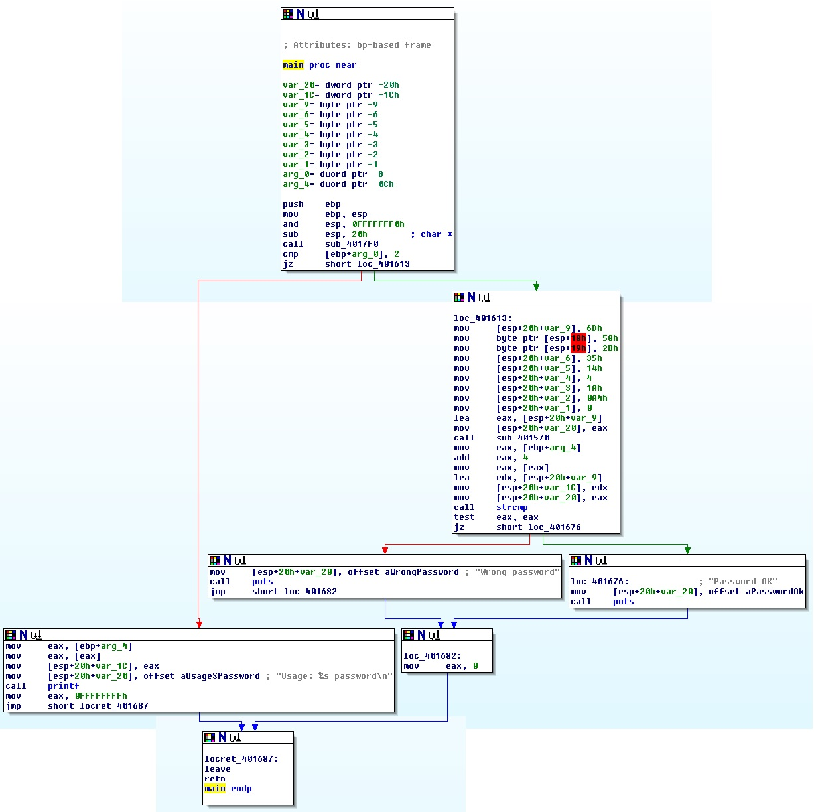
By looking at the graph, we see that we have a strcmp with a string, which was returned by another function, and the second argument of our input. Let' set a breakpoint at strcmp (right-click and 'set breakpoint' or F2) and take a look at the parameters.
To start the debugger with arguments for the program, we need to specify them in the 'Process options' (menu -> debugger). We just use 'test' as our password.
When starting the debugger, we hit a breakpoint right at the beginning. This was not the one we are looking for, so we just continue (F9) till the next breakpoint (which is now the one we defined)
Since we know that in the x86 calling conventions, the parameter for a function have to be put on the stack. By looking at the code, we see that we don't have to look at the stack for the string-pointers, because they are still in edx and eax.
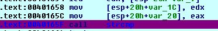
So we check, what's the content of these strings:
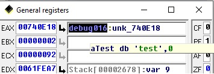
eax is our string from the parameter, so edx points to the password. We can go to the stack-location, where edx points to by clicking at the small arrow left of Stack[00002678]:var_9
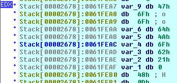
Well, this is currently not very useful, but we see that there is some 0-terminated array there. Let's remove the format of the data for the items (select, then right-click and use 'undefine' or U)
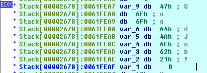
Now this looks like a usable string. Now we start the program again with this string as password.
ex1 GoodJob!
Password OKNice, so we solved exercise 1.
Exercise 2
Like in exercise 1 we have to find the main-function. When looking at the program-output, se see that we can search for 'Array 1:'. This gives us following graph: (sub_401570)
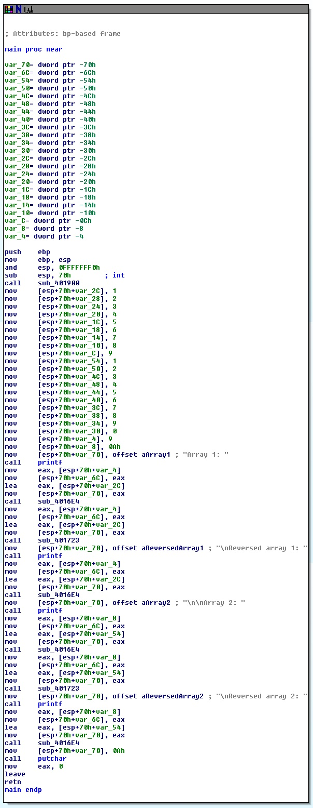
So we have 2 arrays here and 2 variables for the lengths of the arrays (9 and 10).
Then is seems that the arrays and their reversed content are printed.
Now let's start the program and see what happens:
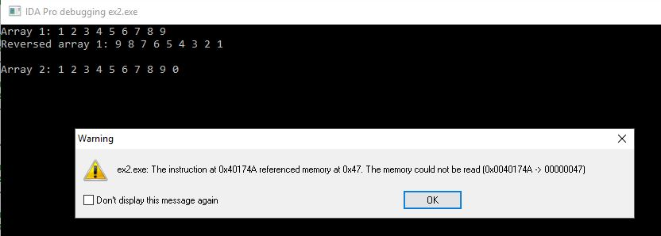
Ok, the first array is processed normally, but the second one crashed. Also the crash must occur while the reversing of the array.
The crash happens on address 0040174A in the following function:
.text:00401723 ; ¦¦¦¦¦¦¦¦¦¦¦¦¦¦¦ S U B R O U T I N E ¦¦¦¦¦¦¦¦¦¦¦¦¦¦¦¦¦¦¦¦¦¦¦¦¦¦¦¦¦¦¦¦¦¦¦¦¦¦¦
.text:00401723
.text:00401723 ; Attributes: bp-based frame
.text:00401723
.text:00401723 sub_401723 proc near ; CODE XREF: main+E5p
.text:00401723 ; main+139p
.text:00401723
.text:00401723 var_C= dword ptr -0Ch
.text:00401723 var_8= dword ptr -8
.text:00401723 var_4= dword ptr -4
.text:00401723 arg_0= dword ptr 8
.text:00401723 arg_4= dword ptr 0Ch
.text:00401723
.text:00401723 push ebp
.text:00401724 mov ebp, esp
.text:00401726 sub esp, 10h
.text:00401729 mov [ebp+var_4], 0
.text:00401730 mov eax, [ebp+arg_4]
.text:00401733 sub eax, 1
.text:00401736 mov [ebp+var_8], eax
.text:00401739 jmp short loc_40178D
.text:0040173B ; ---------------------------------------------------------------------------
.text:0040173B
.text:0040173B loc_40173B: ; CODE XREF: sub_401723+70j
.text:0040173B mov eax, [ebp+var_4]
.text:0040173E lea edx, ds:0[eax*4]
.text:00401745 mov eax, [ebp+arg_0]
.text:00401748 add eax, edx
.text:0040174A mov eax, [eax]
.text:0040174C mov [ebp+var_C], eax
.text:0040174F mov eax, [ebp+var_4]
.text:00401752 lea edx, ds:0[eax*4]
.text:00401759 mov eax, [ebp+arg_0]
.text:0040175C add edx, eax
.text:0040175E mov eax, [ebp+var_8]
.text:00401761 lea ecx, ds:0[eax*4]
.text:00401768 mov eax, [ebp+arg_0]
.text:0040176B add eax, ecx
.text:0040176D mov eax, [eax]
.text:0040176F mov [edx], eax
.text:00401771 mov eax, [ebp+var_8]
.text:00401774 lea edx, ds:0[eax*4]
.text:0040177B mov eax, [ebp+arg_0]
.text:0040177E add edx, eax
.text:00401780 mov eax, [ebp+var_C]
.text:00401783 mov [edx], eax
.text:00401785 add [ebp+var_4], 1
.text:00401789 sub [ebp+var_8], 1
.text:0040178D
.text:0040178D loc_40178D: ; CODE XREF: sub_401723+16j
.text:0040178D mov eax, [ebp+var_4]
.text:00401790 cmp eax, [ebp+var_8]
.text:00401793 jnz short loc_40173B
.text:00401795 nop
.text:00401796 leave
.text:00401797 retn
.text:00401797 sub_401723 endpLet's find out how this function is working. Obviously, it is some sort of reverse algorithm and has 2 arguments and 3 local variables.
So we set a breakpoint at the start of the function (but after the ebp saving) and try to figure out what's in these arguments and variables.
Arguments on stack:
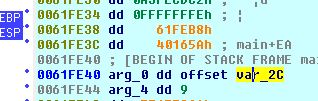
Pointer from arg_0:
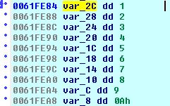
This means that arg_0 is the array and arg_4 is the length of the array.
We also know that the function works with an array-length of 9, but not with 10.
To figure out what happened, we must go a little deeper here. Let's take a look on the local variables:
var_4- is initialized with0(0x00401729)var_8- is initialized withlength-1(0x00401730 - 0x00401736)var_C- is used for some swapping of variables of the array, indexed byvar_4andvar_8(0x0040173B-0x00401783)
We also see, that var_4 and var_8 are incremented/decremented and then there is a comparison if they are equal
(0x00401785 - 0x00401789).
And here we might have our problem, the conditional jump at 0x00401793 is a jnz, but this can cause problems, because this only works on odd lengths of arrays. We also can confirm this behavior with the data we have extracted above. To fix this, the jnz would have to be replaced by a js.
Exercise 3
Again, finding the main-function is the first task here (hint: search for the string 'Usage:')
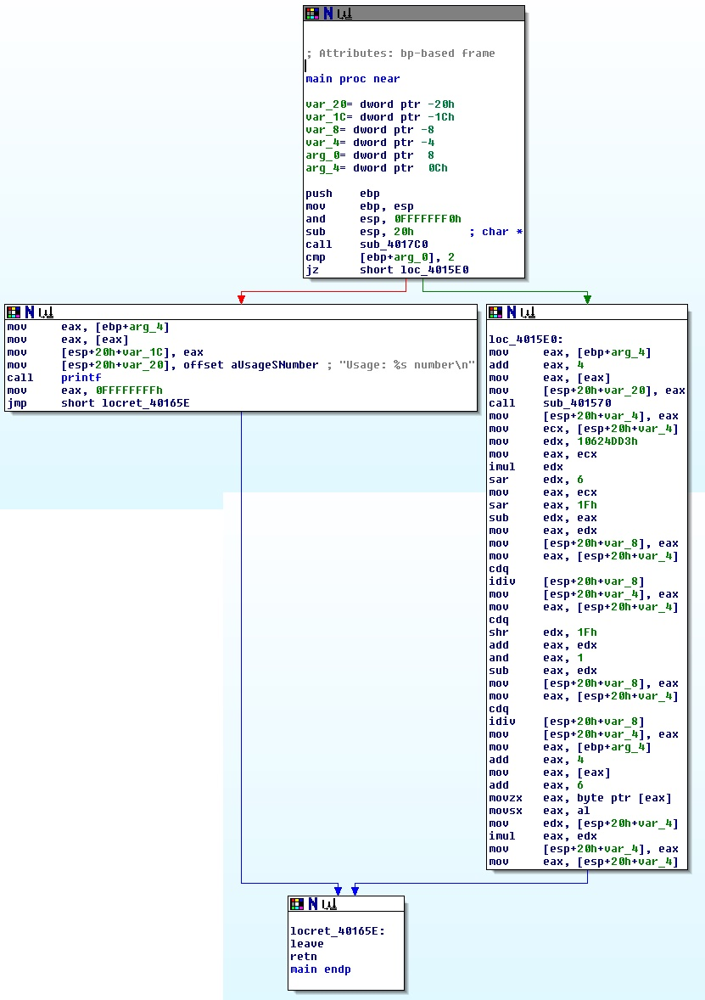
There is also a call to another function:
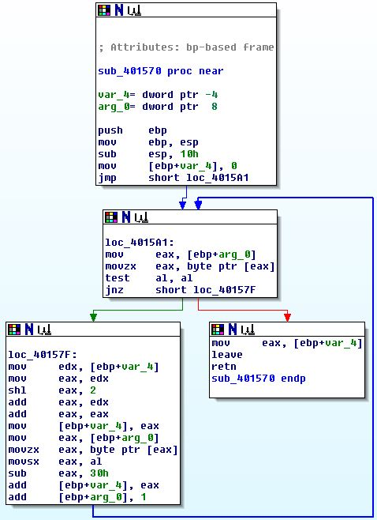
It seems that this function is to convert a string to a number. But without checking if the characters are really numbers.
Our plan to find the right input is to start the program with different input parameters and see where the exceptions occur and how we have to alter the input to get past the errors. We also check the values of the variables, when they are assigned.
Let's begin with 1234 as parameter:
sub_401570 returns 0x000004d2, which is 1234 in decimal. so the function works for the right input. The result is then stored in var_4
Next, there happens some 'magic' with bit-operators, which would be very painful to figure it out by our self. So we check, what is stored in the local-variables.
| Position | Variable | Value |
|---|---|---|
| 0x004015F0 | var_4 | 0x000004d2 (1234) |
| 0x0040160D | var_8 | 0x00000001 (1) |
| 0x0040161A | var_4 | 0x000004d2 (1234) |
| 0x0040162D | var_8 | 0x00000000 (0) |
crash at the division at 0x00401636.
Now we start over again, but with another number. We try a larger one, because var_8 gets derived from var_4, so we may guess, that there is perhaps a division there.
| Position | Variable | Value |
|---|---|---|
| 0x004015F0 | var_4 | 0x00003039 (12345) |
| 0x0040160D | var_8 | 0x0000000C (12) |
| 0x0040161A | var_4 | 0x00000404 (1028) |
| 0x0040162D | var_8 | 0x00000000 (0) |
| Position | Variable | Value |
|---|---|---|
| 0x004015F0 | var_4 | 0x0001e240 (123456) |
| 0x0040160D | var_8 | 0x0000007B (123) |
| 0x0040161A | var_4 | 0x000003eb (1003) |
| 0x0040162D | var_8 | 0x00000001 (1) |
wow, this was actually working! (return code 0), why?
We try to make some c-code (check the instructions to get some additional info beside the debug-output from the 3 different arguments):
var_4 = sub_401570(argv[1]);
var_8 = var_4/1000;
var_4 /= var_8;
var_8 = var_4%2;Then we also have some block for loading a character of argv[1] and multiply it with var_4, which is then the return value.
var_4 *= argv[1][6];So for the program to finish with return code 0 and without crashing, the number must have exactly 7 digits (so the first potential division-error is also handled with, because there the number must be > 1000), and the input/1000 also have to be an odd number. Interestingly, we could also input some other characters than numbers, and the program may also finish successfully :)
Solutions for Radare2
As we saw in the exercises for '2. Understanding Algorithms', finding out what a binary is doing can be very time-consuming and only guessing what a program does is also not the best way to analyze a binary. So we use a debugger in addition to the features of Radare2, we used before.
To start radare2 in debugger-mode we have to add a -d as parameter. In addition with the analyzation parameter we now have r2 -A -d binary. When radare2 starts, it displays some information about the process like pid and tid.
It is also possible to connect radare2 to other debuggers, but for our purposes this is not needed now.
The basic commands in the debugger are:
db address Set breakpoint
db -address Remove breakpoint
do Reopen program
dc Continue
ds Step in
dso Step out
dss Skip instruction
dp Shows debugged process, child processes and threads
dm Shows memory map
dbt Shows backtrace
Please note that not all trivial tasks will be shown in the solution (for example finding the main-function), since this is handled in other exercises. However, the commands used are still given.
Exercise 1
Ok, there would be an easy solution for this by just using ltrace ./ex1 test to find the password, but let's use the radare2 debugger :)
Let's now start radare2 with r2 -A -d ./ex2. This gives us the following information (pid and tid may differ):
Process with PID 6324 started...
PID = 6324
pid = 6324 tid = 6324
r_debug_select: 6324 6324
Using BADDR 0x8048000
Asuming filepath ./ex1
bits 32
pid = 6324 tid = 6324So now we just try to find out what happens when we run the program with dc:
Usage: ./ex1 password
r_debug_select: 6324 1Ok, this was not going well, perhaps we should pass some arguments to the program. This can be done with the help of rarun2:
r2 -Ad ./ex1 testpass
Running the program now gives us this output:
Perhaps we are lucky and find the password as a string in the data-section of the binary with iz:
vaddr=0x08048600 paddr=0x00000600 ordinal=000 sz=20 len=19 section=.rodata type=a string=Usage: %s password\n
vaddr=0x08048614 paddr=0x00000614 ordinal=001 sz=15 len=14 section=.rodata type=a string=Wrong password
vaddr=0x08048623 paddr=0x00000623 ordinal=002 sz=12 len=11 section=.rodata type=a string=Password OKWell, that was obviously not such an easy solution, even if we look at all strings in the binary with izz we won't find anything useful.
Perhaps we get lucky when we look at the binary (afl s main pdf)
The most interesting line here is:
0x08048537 e8c4fdffff call sym.imp.strcmp ; sub.strcmp_92_2fc+0x4 ;sub.strcmp_92_2fc(unk, unk) ; sym.imp.strcmpWhich is a string-comparison and depending on the result it displays either Password OK or Wrong password
So lets set a breakpoint here with db 0x08048537 and run the program with dc. This should give us the following output, which indicates that we hit the breakpoint:
hit breakpoint at: 8048537
r_debug_select: 6759 1Since this is a 32-bit Linux binary, the arguments for the function-call are on the stack. So we look at the strings at the last 2 addresses on the stack (print 0-terminated string - psz @ address):
[0x08048537]> psz @ [esp]
testpass
[0x08048537]> psz @ [esp+4]
GoodJob!We know, that testpass was our given argument, so GoodJob! is our solution!
Exercise 2
Now we have to find out why the program crashes. So let's just load it with r2 -Ad ./ex2 and start it (dc) to see what happens.
Array 1: 1 2 3 4 5 6 7 8 9
Reversed array 1: 9 8 7 6 5 4 3 2 1
[+] SIGNAL 11 errno=0 addr=0x47 code=1 ret=0
r_debug_select: 6784 1
[+] signal 11 aka SIGSEGV received 0Well, this doesn't look good, but at least some of the code was executed. But first we take a look at the error itself. It says signal 11 aka SIGSEGV, which is a segment fault. So we might be out of boundaries here.
Now we look where the error happens with pdf. This is in the function sym.reverse at address 0x080485ec.
/ (fcn) sym.reverse 117
| ; arg int arg_2 @ ebp+0x8
| ; arg int arg_3 @ ebp+0xc
| ; var int local_1 @ ebp-0x4
| ; var int local_2 @ ebp-0x8
| ; var int local_3 @ ebp-0xc
| ; CALL XREF from 0x080484eb (sym.main)
| ; CALL XREF from 0x08048541 (sym.main)
| ;-- sym.reverse:
| 0x080485c5 55 push ebp
| 0x080485c6 89e5 mov ebp, esp
| 0x080485c8 83ec10 sub esp, 0x10
| 0x080485cb c745fc000000. mov dword [ebp-local_1], 0
| 0x080485d2 8b450c mov eax, dword [ebp + 0xc] ; [0xc:4]=-1 ; 12
| 0x080485d5 83e801 sub eax, 1
| 0x080485d8 8945f8 mov dword [ebp-local_2], eax
| ,=< 0x080485db eb52 jmp 0x804862f
| | ; JMP XREF from 0x08048635 (sym.reverse)
| | 0x080485dd 8b45fc mov eax, dword [ebp-local_1]
| | 0x080485e0 8d1485000000. lea edx, dword [eax*4]
| | 0x080485e7 8b4508 mov eax, dword [ebp + 8] ; [0x8:4]=-1 ; 8
| | 0x080485ea 01d0 add eax, edx
| | ;-- eip:
| | 0x080485ec 8b00 mov eax, dword [eax]
| | 0x080485ee 8945f4 mov dword [ebp-local_3], eax
| | 0x080485f1 8b45fc mov eax, dword [ebp-local_1]
| | 0x080485f4 8d1485000000. lea edx, dword [eax*4]
| | 0x080485fb 8b4508 mov eax, dword [ebp + 8] ; [0x8:4]=-1 ; 8
| | 0x080485fe 01c2 add edx, eax
| | 0x08048600 8b45f8 mov eax, dword [ebp-local_2]
| | 0x08048603 8d0c85000000. lea ecx, dword [eax*4]
| | 0x0804860a 8b4508 mov eax, dword [ebp + 8] ; [0x8:4]=-1 ; 8
| | 0x0804860d 01c8 add eax, ecx
| | 0x0804860f 8b00 mov eax, dword [eax]
| | 0x08048611 8902 mov dword [edx], eax
| | 0x08048613 8b45f8 mov eax, dword [ebp-local_2]
| | 0x08048616 8d1485000000. lea edx, dword [eax*4]
| | 0x0804861d 8b4508 mov eax, dword [ebp + 8] ; [0x8:4]=-1 ; 8
| | 0x08048620 01c2 add edx, eax
| | 0x08048622 8b45f4 mov eax, dword [ebp-local_3]
| | 0x08048625 8902 mov dword [edx], eax
| | 0x08048627 8345fc01 add dword [ebp-local_1], 1
| | 0x0804862b 836df801 sub dword [ebp-local_2], 1
| | ; JMP XREF from 0x080485db (sym.reverse)
| `-> 0x0804862f 8b45fc mov eax, dword [ebp-local_1]
| 0x08048632 3b45f8 cmp eax, dword [ebp-local_2]
| 0x08048635 75a6 jne 0x80485dd
| 0x08048637 90 nop
| 0x08048638 c9 leave
\ 0x08048639 c3 retSo let's find out how this function is working. Obviously, it is some sort of reverse algorithm and has 2 arguments and 3 local variables.
Then we set a breakpoint at the start of the function (but after the ebp saving) and try to figure out what's in these arguments and variables (db 0x080485c8 do dc)
We can view the actual values of the registers with dr
eip = 0x080485c8
oeax = 0xffffffff
eax = 0xff9d00b4
ebx = 0x00000000
ecx = 0x7ffffffe
edx = 0xf7775870
esp = 0xff9d0068
ebp = 0xff9d0068
esi = 0x00000001
edi = 0xf7774000
eflags = 0x00000296Since we know that the 2 arguments are on the stack, we can view the contents with px 8 @ 0xff9d0068+0x8 (print 8 bytes (2 items on the stack) in hex-format from address 0xff9d0068+0x8)
- offset - 0 1 2 3 4 5 6 7 8 9 A B C D E F 0123456789ABCDEF
0xff9d0070 b400 9dff 0900 0000 ........ The first item (arg_2) is most likely a pointer to 0xff9d00b4 an the second (arg_3) a number (9)
Now we take a look what the first item points to (px @ [0xff9d0068+0x8])
- offset - 0 1 2 3 4 5 6 7 8 9 A B C D E F 0123456789ABCDEF
0xff9d00b4 0100 0000 0200 0000Well ... here we have the numbers 1 and 2 in the first 2 32-bit values. Let's try to display 9 (arg_3) 32-bit values here (px 9*4 @ [0xff9d0068+0x8]).
- offset - 0 1 2 3 4 5 6 7 8 9 A B C D E F 0123456789ABCDEF
0xff9d00b4 0100 0000 0200 0000 0300 0000 0400 0000 ................
0xff9d00c4 0500 0000 0600 0000 0700 0000 0800 0000 ................
0xff9d00d4 0900 0000 .... When we remember, the program output was
Array 1: 1 2 3 4 5 6 7 8 9
Reversed array 1: 9 8 7 6 5 4 3 2 1 before the program crashed. So it seems, that arg_2 is an array with numbers and arg_3 is number of items in this array.
We also see, that the program also outputs the reversed array, so let's continue the program and see what happens (dc)
Array 1: 1 2 3 4 5 6 7 8 9
Reversed array 1: 9 8 7 6 5 4 3 2 1
hit breakpoint at: 80485c8Now that is interesting, there was no SIGSEGV, but instead we hit our breakpoint again. This means, that we function successfully completes with the arguments above. So now, we take a look at the arguments again (ebp was the same).
px 8 @ 0xff9d0068+0x8
- offset - 0 1 2 3 4 5 6 7 8 9 A B C D E F 0123456789ABCDEF
0xff9d0070 8c00 9dff 0a00 0000 ........ px 0xa*4 @ [0xff9d0068+0x8]
- offset - 0 1 2 3 4 5 6 7 8 9 A B C D E F 0123456789ABCDEF
0xff9d008c 0100 0000 0200 0000 0300 0000 0400 0000 ................
0xff9d009c 0500 0000 0600 0000 0700 0000 0800 0000 ................
0xff9d00ac 0900 0000 0000 0000 ........ and continue the execution (dc)
Ah, now we have the crash ... but why?
Well, the only difference is that we now have 10 numbers instead of the 9 in the first execution of this function. To figure out what happened, we must go a little deeper here. Let's take a look on the local variables:
local_1- is initialized with0(0x080485cb)local_2- is initialized withlength-1(0x080485d2 - 0x080485d8)local_3- is used for some swapping of variables of the array, indexed bylocal_1andlocal_2(0x080485dd-0x08048625)
We also see, that local_1 and local_2 are incremented/decremented and then there is a comparison if they are equal
(0x08048627 - 0x08048635).
And here we might have our problem, the conditional jump at 0x08048635 is a jne, but this can cause problems, because this only works on odd lengths of arrays. We also can confirm this behavior with the data we have extracted above. To fix this, the jne would have to be replaced by a js.
Actually, we can already do this here:
- set the breakpoint at the beginning of the function (
db 0x080485c8) - start the program
dc - step over the first execution of the function
dc - set a breakpoint at the faulty jump (
db 0x08048635) - continue and check, if we are at the right position (
dcdrpdf) - replace the instruction (
wx 7ca6-jneis75/jneis7c) and verify the changes (pdf) - remove the breakpoint (
db -0x08048635) - continue the program
dc
[0x080485ec]> do
Wait event received by different pid 7167
Wait event received by different pid 7168
Process with PID 7170 started...
PID = 7170
File dbg://./ex2 reopened in read-write mode
r_debug_select: 7170 7170
Asuming filepath ./ex2
pid = 7170 tid = 7170
[0xf773ca90]> dc
hit breakpoint at: 80485d8
r_debug_select: 7170 1
[0x080485d8]> dc
Array 1: 1 2 3 4 5 6 7 8 9
Reversed array 1: 9 8 7 6 5 4 3 2 1
hit breakpoint at: 80485d8
[0x080485d8]> db 0x08048635
[0x080485d8]> dc
hit breakpoint at: 8048635
[0x08048635]> wx 7ca6
[0x08048635]> db -0x08048635
[0x08048635]> dc
Array 2: 1 2 3 4 5 6 7 8 9 0
Reversed array 2: 0 9 8 7 6 5 4 3 2 1
[0xf773ad49]> Exercise 3
So, the usage of this program is ./ex3 number, so why we don't start it with a string instead r2 -Ad ./ex3 test and then start it dc
r_debug_select: 7326 1
[+] signal 8 aka SIGFPE received 0Ok, we now get a floating point exception. Let's take a look where this happens:
[0xf77cda90]> pdf Cannot find function at 0xf77cda90
Ok, this didn't work as we planned ... perhaps we should take another approach. First we reload the program with do. Then we will go through the program step by step, so we need a breakpoint at the beginning of the main function (db main and verify with s main, pdf). Now we start the program (dc)
hit breakpoint at: 804842b
r_debug_select: 7335 1To make this more comfortable, we switch to the visual mode - debug view (V, p)
Here we can scroll through the binary with the cursor keys. Let's try this to get a hint what the program does.
We see a help-text at the beginning, then a call to a function called sym.getInt and then some calculation and returning the result. So let's see what sym.getInt
The commands for debugging in visual mode are (remember, by pressing ;, you can get a console to input radare2 commands):
F2 toggle breakpoints
F7 / s single-step
F8 / S step-over
F9 continue
c changes to of exit cursor mode
Now we use step-over (F8) to see if anything interesting happens in the main-function.
sym.getInt gets argv[1] as input-parameter and returns 0x00012136 for the input test. So the input is not really checked inside the function.
Now let's start radare2 again, but this time with a more useful argument for the program (q, r2 -Ad ./ex3 1234, s main, db main, dc, V, p)
sym.getInt returns 0x000004d2, which is 1234 in decimal. so the function works for the right input. The result is then stored in local_3
Next, there happens some 'magic' with bit-operators, which would be very painful to figure it out by our self. So we check, what is stored in the local-variables.
| Position | Variable | Value |
|---|---|---|
| 0x08048475 | local_3 | 0x000004d2 (1234) |
| 0x08048490 | local_4 | 0x00000001 (1) |
| 0x0804849a | local_3 | 0x000004d2 (1234) |
| 0x080484ab | local_4 | 0x00000000 (0) |
crash at the division at 0x080484b2.
Now we start over again, but with another number. We try a larger one, because local_4 gets derived from local_3, so we may guess, that there is perhaps a division there.
| Position | Variable | Value |
|---|---|---|
| 0x08048475 | local_3 | 0x00003039 (12345) |
| 0x08048490 | local_4 | 0x0000000C (12) |
| 0x0804849a | local_3 | 0x00000404 (1028) |
| 0x080484ab | local_4 | 0x00000000 (0) |
| Position | Variable | Value |
|---|---|---|
| 0x08048475 | local_3 | 0x0001e240 (123456) |
| 0x08048490 | local_4 | 0x0000007B (123) |
| 0x0804849a | local_3 | 0x000003eb (1003) |
| 0x080484ab | local_4 | 0x00000001 (1) |
wow, this was actually working! (return code 0), why?
We try to make some c-code (check the instructions to get some additional info beside the debug-output from the 3 different arguments):
local_3 = getInt(argv[1]);
local_4 = local_3/1000;
local_3 /= local_4;
local_4 = local_3%2;Then we also have some block for loading a character of argv[1] and multiply it with local_3, which is then the return value.
local_3 *= argv[1][6];So for the program to finish with return code 0 and without crashing, the number must have exactly 7 digits (so the first potential division-error is also handled with, because there the number must be > 1000), and the input/1000 also have to be an odd number. Interestingly, we could also input some other characters than numbers, and the program may also finish successfully :)